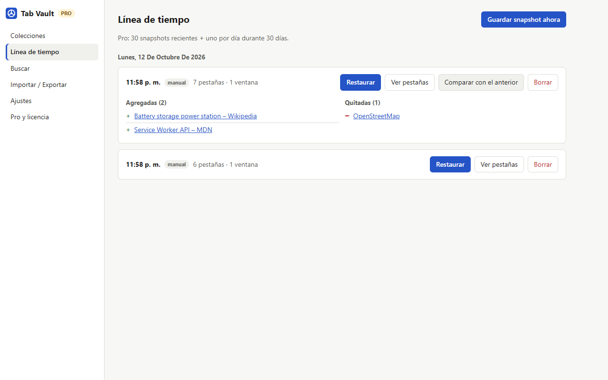

Tus pestañas no son asunto de nadie.
Tab Vault guarda versiones de tus ventanas, grupos de pestañas y listas, y las deja en tu computadora. Sin cuenta. Sin servidor. Sin rastreo. Nada tuyo nos llega nunca.
Empezás gratis. Pro US$19 una vez (o US$4/mes).

El producto es la extensión, no vos
Lo "gratis" casi siempre se paga con datos
Alguien paga las herramientas gratis. Muy seguido son anunciantes, brokers de datos o inversores que apuestan a lo que van a saber de vos.
No podemos vender lo que nunca vemos
Tab Vault no tiene servidor ni cuenta. Tus URLs, títulos y sesiones quedan en tu navegador: no hay nada tuyo para vender, filtrar ni entregar.
Por eso cobramos el software
Una cuota mensual chica o un pago único financian el desarrollo. Ese es todo el modelo de negocio, y por eso tiene que ser pago.
Privacidad y seguridad de fábrica
Versiones, no una sola lista
Snapshots automáticos cada pocos minutos, al cerrar pestañas y al abrir el navegador, con grupos. Restaurá una sesión, una ventana o una pestaña.
Backups cifrados
Exportá un backup cerrado con AES-256 y tu frase, a mano o programado. Seguro para la nube o un pendrive. PRO
Sin rastreadores
Se quitan utm_*, fbclid, gclid y similares de los links antes de guardar nada.
Sitios que nunca se guardan
Excluí tu banco, tu mail o tu portal de salud. Las ventanas de incógnito no se guardan nunca.
Alerta temprana
Si tus datos caen de golpe o no se pueden leer, ves una alerta roja y la última copia buena.
Colecciones bloqueadas
Cifrá una lista con una frase. Quien abra tu navegador solo ve "Colección bloqueada": ni nombre ni links. PRO
Menos desorden
Cerrá pestañas duplicadas con un clic, agregá la pestaña actual a cualquier lista, atajos de teclado y grupos de pestañas en Chrome y Firefox.
Olvidar automáticamente
Borrá solos los snapshots de más de un día, una semana o un mes, y si querés guardá URLs sin títulos.
Borrar todo, un clic
Eliminá todos los snapshots, listas y claves cuando quieras. Sin mails pidiendo "borrar mis datos": de nuestro lado no hay copia.
Precios
Free
Últimos 5 snapshots · colecciones ilimitadas · grupos de pestañas · quitar rastreadores · excluir sitios · borrado automático · limpiar duplicadas · atajos · importar de OneTab, Session Buddy y Tab Session Manager · export manual · alerta de pérdida
Pro de por vida MÁS CONVENIENTE
Se paga solo en menos de 5 meses. Todas las funciones Pro, las de hoy y todas las que vengan, sin renovaciones, sin cuenta, nada que cancelar. Hasta 3 dispositivos. Reembolso en 14 días.
Pro mensual
Las mismas funciones Pro: 30 snapshots recientes + 1 por día durante 30 días · backups cifrados · colecciones bloqueadas · export programado · comparar versiones · búsqueda en todo el historial · restauración guiada. Cancelás cuando quieras y tus datos quedan.
Preguntas frecuentes
¿Es realmente anónimo?
Usar Tab Vault sí: no hay cuenta, ni analítica, y tus pestañas no salen del navegador. Pagar no es 100% anónimo: Polar, nuestro procesador de pagos, necesita un email y una tarjeta como cualquier tienda, y nosotros vemos ese email para recibos y reembolsos. Es lo único que vemos, y nunca se cruza con tu navegación porque tu navegación nunca nos llega.
¿Qué manda la extensión por la red?
Free: nada. Pro: una vez por día, tu clave de licencia y una etiqueta aleatoria del dispositivo a Polar para verificarla. Nunca URLs, títulos ni sesiones. Privacidad.
¿Mensual o de por vida?
Mismas funciones. El de por vida cuesta lo que menos de 5 meses del mensual, incluye todas las funciones Pro futuras y nunca se renueva: es el que recomendamos. El mensual está para probar Pro un tiempo.
¿Tiene sincronización en la nube?
No viene incluida, a propósito: sincronizar significa un servidor con tus pestañas. En cambio, poné el backup automático cifrado en una carpeta que ya sincronices (Drive, Dropbox, Syncthing) e importalo en tu otra computadora. Nadie más que vos lo puede leer.
¿Qué pasa si cancelo el plan mensual?
No se borra nada. Vuelve a los límites de Free para los snapshots futuros y todo lo que ya tenés queda.
Ya perdí mis pestañas de OneTab, ¿qué hago?
Seguí esta guía.